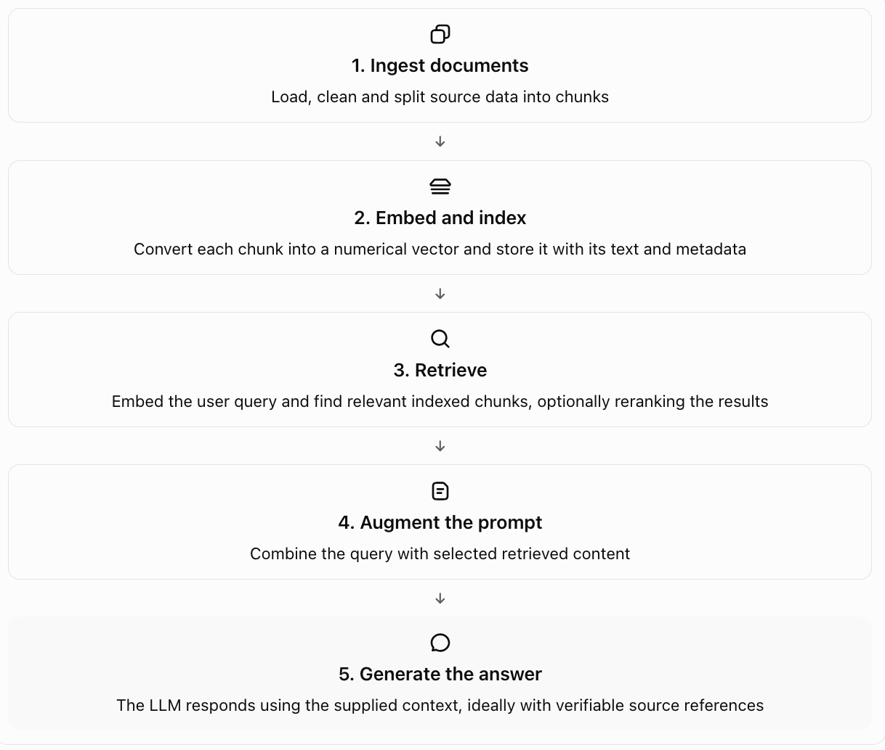

Lesson 1 · Cookmate RAG · recap and practice · two sessions (1: sections 0–8, 2: sections 9–18) · COO-5 to COO-9
Tracing Cookmate's RAG: from a textbook to a ranked list of passages
What Milestones 0 and 1 built so far, and how to prove it works. You'll trace one textbook from download to vectors, look at every intermediate output, learn how retrieval quality is measured, find where a RAG system breaks, and learn to defend each optimisation with a number. Everything here is about what Cookmate's code actually does today, and each part that isn't built yet is labelled as planned. Ends with 12 interview cue cards.
0. Warm-up from the last session (2 minutes, no peeking)
Why can't you compare a Voyage vector with a bge vector?
Why does the chunks table already have a keyword column?
1. The build in one paragraph
Like you're 12
Imagine a librarian who has to answer cooking questions, but only from one textbook, and has to say which page every answer came from. First you cut the book into short passages, each with a label saying which chapter and section it came from. Then you give every passage a "meaning fingerprint": a long list of numbers where passages about similar things get similar numbers. When a question comes in, you fingerprint the question the same way and pull out the passages whose fingerprints are closest. So far Cookmate has cut the book up, fingerprinted all 95 passages, and stored them. Answering the question, and checking the answer is backed up, comes next.
Technically
A separate Python service, services/rag/, ingests the BCcampus textbook Food Safety, Sanitation, and Personal Hygiene (CC BY 4.0) from its official Pressbooks XHTML export. It parses it into 81 sections, chunks them with a heading-aware chunker (max 400 estimated tokens, no overlap, heading path prefixed), embeds the 95 chunks with Voyage voyage-4-lite (1024 dimensions, input_type="document", truncation off), and stores them in Supabase Postgres with pgvector, in a rag schema with row-level security. Every build is an index version that records its chunker settings, model, tokens billed, cost and a content hash. Retrieval is exact cosine search over the current version. A probe showed covered questions scoring 0.55–0.65 against their best chunk, an uncovered food question 0.33 and an off-topic question 0.21. The build cost $0.0004.
2. The picture: the five stages, and where Cookmate is

| Stage | Cookmate code | Status |
|---|---|---|
| 1. Ingest documents | rag/ingest/pressbooks.py (parse), rag/ingest/store.py (write), python -m rag.ingest | BUILT COO-8 |
| 1b. Split into chunks | rag/chunk.py, HeadingAware | BUILT COO-9 |
| 2. Embed and index | rag/embed.py (Voyage), rag/indexer.py (build, promote), python -m rag.indexer | BUILT COO-9 |
| 3. Retrieve | One SQL query today, in a throwaway probe. A retrieve() function and rag.search CLI come next | NEXT COO-10 |
| 3b. Rerank | Voyage rerank-2.5-lite, top 20 in, top 5 out | PLANNED COO-16 |
| 4. Augment the prompt | Frozen system block; passages framed as quoted data; relevance gate | PLANNED COO-12 |
| 5. Generate the answer | Structured Answer with claims, citation ids, abstention; support check | PLANNED COO-12, COO-24 |
| Measure it | Labelled questions, recall@k and MRR with intervals | PLANNED COO-11 |
Say this honestly in an interview. "Stages 1 and 2 are built and verified. Retrieval works as one SQL query and I've probed it. Generation and evaluation are next." An interviewer trusts a precise "not yet" far more than a vague "it does RAG".
3. The four outputs you should be able to show
A RAG system has four outputs worth inspecting. Each can be right while the next one is wrong, which is why you look at each one separately.
Output A: Embeddings
A vector of numbers representing text, for example [0.12, -0.08, 0.31, ...]. Real vectors have hundreds or thousands of dimensions, depending on the model.
In Cookmate, for real (chunk 20, "The Danger Zone", read from Supabase on 12 Oct 2026):
[-0.037919953, -0.041450992, 0.011636746, 0.050066233, 0.003977309, 0.018338948, -0.015663963, ...]
dimensions: 1024 length (L2 norm): 1.0000 model: voyage-4-lite input_type: documentInspect it:
SELECT id, section, left(embedding::text, 90), vector_dims(embedding), vector_norm(embedding)
FROM rag.chunks WHERE section = 'The Danger Zone';What to check: the dimension matches the version's embedding_dim, and the length is 1.0. A single vector tells you almost nothing on its own. You can't read meaning from it; you only compare it with other vectors from the same model.
Output B: Retrieved chunks
A ranked list of records with chunk text, ids, metadata and usually a similarity or distance score. This is the most important output to inspect when debugging retrieval.
In Cookmate, for real (the probe on 9 Oct 2026, question "What is HACCP?"):
rank similarity chunk
1 0.651 An Approach to Food Safety > The HACCP approach
2 0.605 An Approach to Food Safety > The HACCP approach > Principle 1
3 0.601 An Approach to Food SafetyInspect it: the query is section 6's SQL. Look at the ranks, the scores, the heading paths and whether the gold passage is in there at all.
Output C: Context actually supplied to the LLM PLANNED
The selected chunks after filtering, reranking, deduplication, truncation and prompt assembly. This may differ from the raw retrieval results.
In Cookmate, planned for COO-12 and COO-16: the top 20 from search are reranked, the top 5 kept, the relevance gate may drop everything (abstain without calling the model), and the survivors are wrapped as quoted data with their chunk ids. Output C is what the model really saw, so the trace must store these ids, not just Output B's.
Output D: Final generated answer PLANNED
The LLM's response, possibly with citations or source ids. A fluent answer does not prove that the correct evidence was retrieved or that every claim is supported.
In Cookmate, planned for COO-12 and COO-24: a structured Answer of claims, each with citation ids and a quoted span. Code checks every id was in Output C and every quote is really in its passage. A model then checks each claim is supported. If not, one regeneration, then an honest abstention.
The score requires particular care
- A similarity score may be better when higher.
- A distance score may be better when lower.
- A reranker may produce an entirely different type of score.
- For example, some vector-store APIs explicitly return cosine distance, where lower is better.
Cookmate is exactly that example. pgvector's <=> operator returns cosine distance: 0 means the same direction, lower is better. The probe orders by distance (ascending) and displays similarity as 1 - distance (higher is better), so a person can read it. Voyage's vectors have length 1, so cosine similarity equals the dot product here. When the reranker arrives in COO-16, its relevance score is on its own scale and must never be compared with, or thresholded like, cosine similarity.
4. Trace the data flow, hop by hop
Every hop has an input, an output you can look at, and a command or query that shows it. If an answer is wrong later, you walk this list backwards until the output stops looking right.
services/rag/data/raw/foodsafety.xhtml, 135 KB, downloaded by hand in a browser because opentextbc.ca blocks scripts with a Cloudflare check (SOURCES.md).Inspect:
grep -c 'id="chapter-' data/raw/foodsafety.xhtml → 10 chapters.parse_book() at pressbooks.py:95 keeps chapters and the glossary, skips 8 boilerplate pages, and cuts at headings.Inspect:
uv run python -m rag.ingest bccampus --title foodsafety --dry-run prints pages kept, sections, depth, words per section, tables, skipped pages and a content hash. No database write.rag.sections, 81 rows, written by write_source() in one transaction.Inspect:
SELECT ordinal, level, heading_path, length(content) FROM rag.sections ORDER BY ordinal;HeadingAware.chunk() at chunk.py:104.Inspect:
uv run python -m rag.indexer build --dry-run → 95 chunks, token min/median/max, sections split, small chunks. No API call.VoyageEmbedder.embed() at embed.py:231.Inspect: the build prints tokens billed, calls, API seconds, seconds waiting and cost; the SQL in Output A shows any stored vector.
rag.chunks + one rag.index_versions row, written by build() at indexer.py:73.Inspect:
uv run python -m rag.indexer list, then sql/index-sanity.sql (section 8).rag.search.5. The code, line by line
Four excerpts, in the order data flows through them. The ① ② markers are for reading along; they're not in the real code.
services/rag/src/rag/ingest/pressbooks.py:186–211 · _open_heading: finding structure
def _open_heading(self, heading: Tag) -> None:
classes = _classes(heading)
if classes & NUMBER_CLASSES:
return
# ① the "4" before every chapter title (<h3 class="chapter-number">) is dropped.
text = clean(heading.get_text(" "))
...
self._close_section()
# ② a new heading ends the section before it.
if classes & TITLE_CLASSES or not self.stack:
self.stack = [(self.TITLE_LEVEL, text)]
# ③ THE FIX. The page title is found by CLASS, not tag, and put at level 0,
# so no <h1> inside the chapter can ever outrank it. Trusting tags made
# 62 "chapters" out of 10.
return
level = int(heading.name[1])
while len(self.stack) > 1 and self.stack[-1][0] >= level:
self.stack.pop()
# ④ body headings rank only against each other; index 0 (the title) is never popped.
self.stack.append((level, text))
...
else ":~:text=" + quote(text, safe="")
# ⑤ no ids on these headings, so the citation link is a text fragment
# the browser scrolls to and highlights.services/rag/src/rag/chunk.py:104–129 · HeadingAware.chunk: sections become chunks
def chunk(self, sections):
for section in sections:
header = section.heading_path
# ① "Food Safety ... > Preventing Foodborne Illness > The Danger Zone"
budget = max(self.max_tokens - self.estimate(header), self.max_tokens // 4)
# ② the header is repeated in every piece, so the body gets what's left of 400.
bodies = self._split(section.content, budget)
# ③ fits? one body. Too long? split at paragraphs, then items or table
# rows, then sentences, into BALANCED parts (300+300+300, not 400+400+100).
for part, body in enumerate(bodies, start=1):
text = f"{header}\n\n{body}"
# ④ exactly what gets embedded AND stored: the heading gives short chunks
# context ("Reheat to 74°C" is about leftovers) and gives keyword search
# the heading's words.
chunks.append(Chunk(..., part=part, parts=len(bodies), text=text,
token_estimate=self.estimate(text)))
# ⑤ part 2 of 3 is recorded, so a split section can be reassembled and checked.services/rag/src/rag/embed.py:254–283 · VoyageEmbedder._post: one request, safely
for attempt in range(1, self._max_attempts + 1):
self._pacer.wait_for(estimated_tokens)
# ① wait BEFORE sending if this would break the per-minute request or token
# limit. Every attempt counts, retries included.
response = self._client.post(VOYAGE_URL, json=body, headers=self._headers)
# ② body = {"input": [...], "model": "voyage-4-lite",
# "input_type": "document", "truncation": False}
if response.status_code == 200:
return response.json()
if response.status_code not in RETRYABLE_STATUS or attempt == self._max_attempts:
raise EmbeddingError(...)
# ③ a 400 is never retried: the request itself is wrong (e.g. a text too long).
retry_after = _retry_after(response)
if retry_after is not None:
self._sleep(retry_after); continue
# ④ the server said how long; believe it.
if response.status_code == 429:
self._sleep(min(15.0 * 2 ** (attempt - 1), 60.0)); continue
# ⑤ per-minute limits need a per-minute wait: 15s, 30s, 60s.
self._sleep(2 ** (attempt - 1))
# ⑥ outages and timeouts: 1s, 2s, 4s.services/rag/src/rag/indexer.py:73–141 · build: the safe build
chunks = strategy.chunk(sections)
attributions = [attribution_for(...) for c in chunks]
# ① fail now, before anything is paid for, if a source has no licence line.
conn.execute("DELETE FROM index_versions WHERE status = 'building'")
# ② clear a crashed earlier build. It was never served.
INSERT INTO index_versions (..., status) VALUES (..., 'building') RETURNING id
# ③ the new version exists but retrieval can't see it: it only reads 'current'.
result = embedder.embed([c.text for c in chunks], "document")
# ④ the slow, paid step, with NO database transaction open.
with conn.transaction():
INSERT INTO chunks ... %s::vector # all 95 rows
UPDATE index_versions SET status = 'ready', chunk_count, content_hash,
embed_tokens, embed_seconds, embed_cost_usd ...
# ⑤ chunks and their receipt land together, or not at all.
if make_current:
promote(conn, version_id)
# ⑥ one more transaction: old current → retired, this → current.
# A partial unique index makes two 'current' rows impossible.6. The metadata, on its own
Like you're 12
Every passage carries a luggage tag: which book, which chapter, which section, which piece of it, a link back to the page, and the licence. Every build carries a receipt: how it was cut, which fingerprint machine was used, how much it cost, and a code that changes if any passage changes. The tags make citations possible. The receipts make experiments comparable.
Technically
index_versions: one row per build (the experiment log)
| Column | Current value (v3) | What it means | Why it matters |
|---|---|---|---|
status | current | building, ready, current or retired | Retrieval reads only current; at most one, enforced by an index |
chunker, chunker_version | heading_aware, 1 | How text was split | Bumped when the splitting rules change |
chunk_params | {"max_tokens": 400, "tokens_per_word": 1.3} | The chunker's settings | Two arms are comparable only if you know what differed |
embedding_model, embedding_dim | voyage-4-lite, 1024 | Which vector space | Never compare vectors across these |
chunk_count | 95 | Chunks stored | Checked against the actual rows (section 8) |
content_hash | 08afb5b006e8… | Fingerprint of settings and every chunk's text | Same hash = same chunks; proves a rebuild changed nothing |
embed_tokens | 19,927 | Tokens Voyage billed | Cost, and a check on the chunker's estimate |
embed_cost_usd | 0.000399 | At $0.02 per million tokens | The marginal cost of an experiment arm |
embed_seconds | 5.861 | Time on the API, excluding our rate-limit pacing | Pacing measures the account tier, not the model |
chunks: one row per searchable passage
| Column | Example (chunk 20) | Use |
|---|---|---|
index_version_id | 3 | Which build; retrieval filters on it |
source_id | bccampus-foodsafety | Joins to licence, authority, trusted, jurisdiction |
section_ordinal, part, parts | 17, 1, 1 | Where it came from; part 2 of 3 means a split section |
chapter, section, heading_path | Preventing Foodborne Illness, The Danger Zone | The citation's "book › chapter › section" |
url | …/preventing-foodborne-illness/#:~:text=The%20Danger%20Zone | Deep link that scrolls to the heading |
attribution | "The Danger Zone", in Food Safety… Licensed under CC BY 4.0. … | The licence line shown with every citation |
content | Heading path, blank line, body | Exactly what was embedded; what the model will read |
token_count | 263 | The chunker's estimate (the billed total is on the version) |
embedding | 1024 numbers | Output A |
tsv | '0':112,117 '140':56,80 … | Keyword index Postgres keeps in sync; GIN index in COO-15 |
Two tables behind them. sources holds one row per book: licence CC BY 4.0, authority high, trusted true, jurisdiction CA, retrieved 9 Oct 2026, snapshot hash. sections holds the 81 parsed sections, the raw material every chunking experiment starts from.
The retrieval query (Output B), annotated
SELECT 1 - (c.embedding <=> :question_vector) AS similarity, -- ① display: higher is better
c.heading_path, c.part, c.parts, c.url
FROM rag.chunks c
JOIN rag.index_versions v ON v.id = c.index_version_id
WHERE v.status = 'current' -- ② only the served build
ORDER BY c.embedding <=> :question_vector -- ③ sort by DISTANCE: lower first
LIMIT 5; -- ④ KNo vector index exists, so Postgres compares the question with all 95 chunks: exact search. It always finds the true nearest neighbours, and at this size it takes milliseconds.
7. How to read the numbers
The build output, read out loud
chunks: 95 from 81 sections
estimated tokens per chunk: min 25, median 201, max 394 (limit 400), total 19790
sections split: 10 7 into 2, 2 into 3, 1 into 4
small chunks (< 60 tokens): 7
embedded: 19927 tokens billed in 6 call(s), 5.9s on the API (+117s waiting on rate limits), $0.000399
token estimate check: estimated 19790, billed 19927 (1.31 tokens per word; the chunker assumes 1.3)- 95 from 81: most sections fit in one chunk; 10 were split. The 4-way split is the 690-word "Step 5 › REHEATING" section, which holds a summary table the authors gave no heading.
- max 394, limit 400: the cap held.
- 7 small chunks: the 6–38-word "PREPARING / COOKING" subsections. Short chunks can embed weakly; whether that hurts is a question for the eval, not a guess.
- 1.31 vs 1.30: the word-based estimate is accurate on this book, so chunk sizes are what we think they are.
- 5.9 s vs 117 s: the model is fast; the free-tier account limit is what made it slow.
The similarity probe, read out loud
| Question | Best similarity | Best chunk | Reading |
|---|---|---|---|
| What temperature should my fridge be? | 0.62 | Refrigerated Products | Covered, right section |
| What is HACCP? | 0.65 | The HACCP approach | Covered, right section |
| How long can cooked food sit out? | 0.63 | Advance preparation | Covered, but see below |
| Why did my hollandaise split? (not in this book) | 0.33 | Food Allergies | Wrong chunk, low score |
| What's the weather tomorrow? (off topic) | 0.21 | Cleaning Procedures | Wrong chunk, lower score |
- Ranking is what matters, not the raw number. 0.62 is not a probability, and another model would give other values for the same pair.
- The gap is the signal. 0.55–0.65 covered, 0.33 uncovered, 0.21 off-topic: that gap is what will let the system abstain. The cut-off must be tuned on labelled questions, not on five.
- Vector search always returns something. The weather question still gets three "results". Without a threshold, the model would be handed cleaning procedures as evidence about the weather.
The two-hour rule: why eyeballing fails
Q: How long can cooked food sit out before it is unsafe?
#1 0.632 Top 10 List › 2. Advance preparation
#2 0.594 [2h] Top 10 List › 1. Improper cooling (1/2)
#3 0.583 [2h] Top 10 List › 4. Inadequate reheating for hot holding
#4 0.573 Top 10 List › 8. Use of leftovers
#5 0.551 [2h] Food Safety Plan › Step 5 › REHEATING (3/3)
#9 0.537 Time-temperature Control of PHFs (1/3) ◀ the section that teaches it
#20 0.512 [2h] Time-temperature Control of PHFs (3/3)
#22 0.510 Time-temperature Control of PHFs (2/3)
[2h] = the chunk states the two-hour rule; 12 chunks do in totalThe top result looks fine. But the section dedicated to the rule ranks 9th, 20th and 22nd, and ranks 1 to 26 all sit between 0.63 and 0.50. Retrieval found the answer; its ordering is coarse. You only see this by looking past rank 1, and you only measure it with labelled questions (section 9).
8. How to know it works, and that it's measured right
Four checks, from "I can see it" to "I can prove it".
uv run python -m rag.indexer list shows version 3, current, 95 chunks, 19,927 tokens, $0.000399, hash 08afb5b006e8.SELECT c.heading_path, c.part, c.parts, c.token_count, left(c.content, 200), c.url
FROM rag.chunks c JOIN rag.index_versions v ON v.id = c.index_version_id
WHERE v.status = 'current' ORDER BY c.ordinal LIMIT 10;--max-tokens: it must change. Both are tested in tests/test_indexer.py.services/rag/sql/index-sanity.sql. It checks rules that must always hold. On 12 Oct 2026, against the live index, every problem count was 0:
| Rule | Why it must hold | Result |
|---|---|---|
| Exactly one current version | Retrieval would be ambiguous otherwise | 0 |
| Every vector has the version's dimension | A mixed-model index gives meaningless distances | 0 of 95 |
| Every vector has length 1 | Voyage normalises; otherwise similarity ≠ dot product | 0 of 95 |
| Stored chunk count matches the version row | A partial write would show here | 0 |
| No chunk over the token limit | The chunker's contract | 0 |
| Every section has at least one chunk | Nothing silently dropped between hops 3 and 4 | 0 of 81 |
| Every split section has all its parts | No piece lost in a split | 0 |
| Every chunk has a url and a licence line | No citation without attribution | 0 |
| Every chunk starts with its heading path | What's stored is what was embedded | 0 |
These prove the index is built correctly. They do not prove retrieval is good. A perfectly built index can still rank the right passage 20th. That second question needs section 9.
9. Measuring retrieval quality
A. Retrieval metrics
These measure whether your system finds the right evidence and ranks it well.
| Metric | What it tells you | Example interpretation |
|---|---|---|
| Recall@K | How much of the relevant evidence is found in the top K results? | Recall@5 of 0.80 means 80% of the labelled relevant items were retrieved within the first five results, under your chosen definition of relevance. |
| Precision@K | What proportion of the top K results are relevant? | Precision@5 of 0.60 means 3 of the top 5 retrieved items are relevant. |
| Hit rate@K | Did at least one relevant item appear in the top K? | Hit rate@5 of 0.90 means 90% of test queries retrieved at least one relevant item in their top five. |
| MRR | How highly ranked is the first relevant result, on average? | Higher MRR means the first useful result tends to appear closer to rank 1. |
| nDCG@K | How good is the ranking when results have different degrees of relevance? | Higher nDCG means highly relevant chunks tend to appear nearer the top. |
Worked example: one query, two definitions of "relevant"
The two-hour-rule question from section 7. The same ranking scores very differently depending on what you label as gold. That's what "under your chosen definition of relevance" means.
| Metric | Gold = any chunk stating the rule (12) | Gold = the dedicated section's 3 chunks |
|---|---|---|
| Hit rate@5 | 1 (rank 2 is relevant) | 0 |
| Recall@5 | 3 ÷ 12 = 0.25 | 0 ÷ 3 = 0 |
| Precision@5 | 3 ÷ 5 = 0.60 | 0 |
| Reciprocal rank | 1 ÷ 2 = 0.50 | 1 ÷ 9 = 0.11 |
nDCG@5 with graded relevance (dedicated section = 2, states the rule = 1, other = 0): the top five are graded 0, 1, 1, 0, 1. DCG = 1/log₂3 + 1/log₂4 + 1/log₂6 = 1.52. The ideal ranking (three 2s, then two 1s) has DCG 5.08. nDCG@5 = 1.52 ÷ 5.08 = 0.30: the evidence is there, the best of it is not near the top.
This is one query, from a probe. Real numbers need the labelled set in COO-11: 30+ questions with gold sections written before running, every metric reported with a Wilson interval, and every run stored with the hash of the chunker, model and index version that produced it.
B. Generation metrics PLANNED
| Metric | Measures | Main limitation | Cookmate plan |
|---|---|---|---|
| Context precision | Whether relevant retrieved chunks are ranked above irrelevant ones | Depends on how relevance is judged and which variant of the metric is used | Labelled gold sections, COO-11 |
| Context recall | Whether the retrieved context covers the facts needed for the reference answer | Requires a reference or another way to establish the missing facts | Gold passage sets per question |
| Faithfulness / groundedness | Whether the generated answer's claims are supported by the retrieved context | A faithful answer can still be incomplete or fail to answer the question | Support check, COO-24: code first, then a Haiku check per claim |
| Answer relevancy | Whether the response addresses the user's question | A relevant-sounding response may still be factually wrong | Haiku judge, calibrated on 20 blind human labels, COO-71 |
| Answer correctness | Whether the response matches the expected answer or facts | Depends on reference quality and the evaluation method | Reference answers for a subset |
C. Operational metrics
Your system could retrieve excellent chunks and generate accurate answers but still be too expensive or slow for real users. Track these separately.
| Metric | Why it matters | Cookmate today |
|---|---|---|
| Retrieval latency | How long vector search and any filtering take | Not recorded yet (COO-62) |
| Reranking latency | How much additional time reranking adds | No reranker yet (COO-16) |
| End-to-end latency | How long the user waits for the final answer | No answers yet (COO-12) |
| Token usage and cost | How much the embedding, reranking and generation calls cost | Recorded for index builds: 19,927 tokens, $0.000399. Queries: not yet |
| Error rate | How often retrieval, APIs, embeddings or generation fail | Failures raise EmbeddingError and leave a building row; not counted yet |
| Index freshness | Whether changed or deleted source documents are reflected in the index | Visible: sources.retrieved_on vs the version's completed_at; content hashes show change |
| Abstention quality | Whether the system appropriately admits when it lacks sufficient evidence | Probe shows the gap (0.33 / 0.21 vs 0.55+); measured with 10 unanswerable questions in COO-11 |
10. One question, end to end: the trace to aim for
Illustrative fields for a debugging view, not actual results from your code. Each stage says what Cookmate records today.
| Stage | Fields | Cookmate today |
|---|---|---|
| 1. Input | Original user query, rewritten query if applicable, metadata filters, timestamp and request ID. | Nothing stored per query yet |
| 2. Embedding | Provider, model identifier, vector dimension, duration and any query-specific embedding instructions. | Stored for documents on index_versions. The query side uses input_type="query", not yet logged |
| 3. Retrieval | Top-K retrieved chunk IDs, ranks, scores, short content previews, source metadata and applied filters. | Probe output only. COO-62 adds a trace record per retrieval |
| 4. Reranking and context assembly | Original rank, reranked position, reranker score, chunks kept or removed, token count and truncation details. | Planned, COO-16 and COO-67 |
| 5. Generation | LLM identifier, prompt/template version, selected source IDs, output, citation mappings, token usage and latency. | Planned, COO-12; prompt hash recorded |
| 6. Evaluation | Expected relevant sources, actual relevant sources, retrieval metrics, answer evaluation scores and any human reviewer judgement. | Planned, COO-11 (rag_eval_runs) and COO-71 (judge calibration) |
Why the trace must store Output C, not just Output B. If the answer is wrong, the first question is "was the right passage in what the model actually saw?" If yes, it's a generation fault. If it was retrieved but cut by the reranker or the gate, it's an assembly fault. If it was never retrieved, it's retrieval. Without stages 3 and 4 logged separately, you can't tell which.
11. Identify failure points
Every failure gets classified as ingestion, retrieval, assembly, generation or routing, by walking the trace backwards. These are the ones Cookmate has already hit, or is built to catch.
| Failure | Symptom | Where to look | Hit in Cookmate? |
|---|---|---|---|
| Parser misreads structure | Wrong heading paths; citations name the wrong chapter | ingest --dry-run: "sections by depth" | Yes. 62 "chapters" from 10; fixed by finding titles by class |
| Boilerplate pollutes the corpus | "About this book" pages retrieved for real questions | Skipped pages list in the ingest summary | Avoided. 8 pages skipped on purpose |
| Content silently truncated | A chunk's second half can never be found, yet is cited | truncation: false in build_request | Prevented. An over-long text is a loud error |
| Query and document embedded differently | Lower similarity across the board | input_type on each call | Prevented by design: document vs query |
| Mixed models in one index | Nonsense distances | index-sanity.sql: dimension rule | Prevented: one model per version |
| Provider rate limits | Build fails with 429 | Build output; EmbeddingError | Yes. Free tier 3 req / 10K tokens per minute; now paced |
| Half-finished build served | Missing chunks | status; chunk count rule | Prevented: build beside, promote in one transaction |
| Right evidence ranked low | Generic answer from a weaker passage | Output B past rank 1; MRR | Yes. The dedicated section ranked 9th–22nd |
| No relevant evidence, results anyway | A confident answer built from unrelated text | Best similarity; abstention questions | Seen in the probe. Weather → cleaning procedures at 0.21 |
| Stale index | Answers from an old edition | retrieved_on vs completed_at | Not yet relevant: one snapshot |
| Unsupported claim in the answer | Fluent, cited, wrong | Support check per claim | Planned, COO-24 |
12. Justify optimisations with evidence
An optimisation is a claim: "X makes retrieval better at acceptable cost". Back it the same way every time.
| Lever | What it trades | Measured in |
|---|---|---|
| Chunk size (400 now) | Bigger keeps context but blurs meaning; smaller is sharp but loses context | COO-13 |
| Split strategy | Heading-aware keeps clean citations; fixed-size with overlap is uniform but cuts across sections | COO-13 |
| Heading path prefix | Context for short chunks vs a few tokens each | An ablation: build without it |
| Embedding model | Quality vs cost and latency; hosted vs self-run | COO-14 (Voyage vs bge-small) |
| Vector size and number format | Voyage offers 256–2048 dimensions and int8/binary: less storage, possibly lower quality | A follow-on experiment |
| Keyword + vector (hybrid) | Exact terms like "2 hours" vs a second ranking to fuse | COO-15 |
| Reranker | Fixes coarse ordering vs extra latency and cost per question | COO-16 |
| K | More evidence vs more noise and prompt cost | COO-11 (recall@5 vs @10) |
| Abstention threshold | Too high refuses good questions; too low answers bad ones | COO-69 |
| Exact vs approximate index | Perfect recall vs speed at millions of chunks | COO-17 (Pinecone) |
The evidence for the reranker already exists, before any eval. In section 7, ranks 1 to 26 sat within 0.13 of each other, and the dedicated section ranked 9th. That's a hypothesis worth testing, written down before the test. "Rerankers usually help" is not.
13. Trace these functions in your repository
The key is to talk about what your code actually does, not what a textbook RAG system could do. Open each file and answer out loud.
| Find this in your code | Questions you should be able to answer | Cookmate's answer |
|---|---|---|
Document ingestioningest/pressbooks.py, ingest/store.py | Where does the source data come from? What gets included or excluded? | Official XHTML export, downloaded by hand (Cloudflare). Chapters and glossary kept; 8 boilerplate pages, images, credits, scripts and footnotes dropped. Licence in SOURCES.md |
Chunkingchunk.py | What splits the documents? What are the chunk size and overlap? Why? | HeadingAware: one chunk per section, max 400 estimated tokens, no overlap, balanced splits, heading path prefixed. Why: a chunk maps to a citable section. Fixed-size with overlap is the comparison arm |
Embedding generationembed.py | Which provider and model? What dimensions? How are failures handled? | Voyage voyage-4-lite, 1024 dims, unit length. Truncation off. Pacing, Retry-After, 429 backoff 15/30/60 s, outages 1/2/4 s, no retry on 400. Vectors matched to inputs by index |
Vector storagemigrations/, indexer.py | Which database and index? What fields are stored? How are updates and deletions handled? | Supabase Postgres + pgvector 0.8.2, rag schema, RLS on. No ANN index: exact scan. Updates = a new index version, promoted in one transaction; old ones retired; crashed builds deleted; re-ingest replaces a book's sections |
| Retrieval | What is the query path? What is K? Which distance metric is used? Are filters applied? | Today: one SQL query. Cosine distance <=>, filter status = 'current', K = 3–5 in the probe. Function and CLI in COO-10 |
| Reranking | Is there a reranker? What candidates does it receive, and how many results survive? | None yet. Planned: Voyage rerank-2.5-lite, top 20 in, top 5 out, kept only if COO-16 shows it earns its latency |
| Prompt assembly | Which retrieved text is actually included? How are token limits and source references handled? | Not built. Planned: survivors framed as quoted data with chunk ids; frozen, cacheable system block; relevance gate can send nothing |
| Generation | Which LLM? What prompt and output format? What happens when evidence is insufficient? | Not built. Planned: Sonnet, structured Answer (claims, citation ids, quotes), abstention with a reason |
| Evaluation | Are there labelled test queries? Which metrics are actually calculated? Are they tested automatically? | Not yet labelled. 76 automated tests prove the pipeline is built correctly, and index-sanity.sql proves the live index. Retrieval metrics come in COO-11 |
| Observability | Do the logs show intermediate chunks, scores, latency and failures, or only the final answer? | Build-time: yes (summary, version row, hash, cost). Query-time: not yet; that's COO-62 and COO-145 |
14. What the measurement found that nobody asked for
- Tag order lies in real books. The authors used
<h1>inside chapters and<h2>for chapter titles. Only checking a dry run against the real file showed 62 chapters out of 10. - Most of a textbook's pages aren't about its subject. 8 of 19 pages were boilerplate that would have competed for every query.
- The provider's rate limiter doesn't count like its bill. A batch billed at about 7,300 tokens was refused under a 10,000 limit. Batches are now capped at 40% of the per-minute limit.
- Word-based token estimates are good enough here: 1.30 assumed, 1.31 billed.
- Similarity scores are bunched. The top result looked right while the dedicated section ranked 9th. Retrieval quality can't be judged from rank 1.
15. Takeaways
Say this in an interview
"I ingest an openly licensed food-safety textbook from its official export, parse it into sections by heading, and keep only the chapters and glossary. The first parser trusted heading tags and made 62 chapters out of 10, so titles are found by class now. Each section becomes one chunk unless it's over 400 tokens, then it splits into balanced parts, and every chunk starts with its heading path. I embed with Voyage's voyage-4-lite at 1024 dimensions, documents and queries in different modes, truncation off, and store them in Postgres with pgvector. Each build is a versioned index row with its settings, tokens, cost and a content hash, built beside the live one and promoted in one transaction. Search is exact cosine over about a hundred chunks. Nine invariants hold on the live index. On retrieval, covered questions score 0.55 to 0.65 and off-topic ones about 0.2, which is what abstention will rest on, but the scores are bunched: the section that teaches the two-hour rule ranked ninth. That's why the next step is a labelled question set with recall and MRR, and only then a reranker, if the numbers say it helps."
16. Retrieval (10 minutes)
What does pgvector's <=> operator return in Cookmate's query?
Why must the trace store Output C, not just Output B?
How does the parser stop in-chapter h1s outranking chapter titles?
Why is Voyage's truncation turned off at index time?
For the two-hour query, what is precision@5 with the broad gold set?
All nine sanity rules pass. What does that prove?
Why does Cookmate need a relevance threshold before generation?
Why does embed_seconds leave out the 117 s of rate-limit waiting?
17. Interview cue cards
Write means code it live in a blank file (time yourself). Explain and Design mean say the answer out loud first. Only then open the model answer. Any card you miss goes to the top of tomorrow's session.
CARD 1 · EXPLAIN WITH THE CODE OPEN
"Walk me through how a textbook becomes searchable vectors in your code."
Model answer
pressbooks.py:95parse_book: official XHTML export → sections. Titles found by class, number headings dropped, boilerplate pages skipped, tables to Markdown, glossary as "term: definition".store.pywrite_source: 81 sections replace the book's old ones in one transaction.chunk.py:104: one chunk per section, long ones split into balanced parts under 400 tokens, heading path first.indexer.py:73build: new version asbuilding, embed with no transaction open, write chunks and markreadytogether, promote in one more transaction.embed.py:231: Voyage,input_type="document", truncation off, paced, retried, vectors matched by index.
Then the numbers: 95 chunks, 19,927 tokens, $0.0004, 5.9 s on the API.
CARD 2 · EXPLAIN
"How do you know your index is correct?"
Model answer
- Invariants on the live index (
sql/index-sanity.sql): one current version; every vector has the version's dimension and length 1; stored count matches the receipt; no chunk over the limit; every section has a chunk; every split has all its parts; every chunk has a url and a licence line and starts with its heading path. All 0 problems. - Reproducibility: same settings give the same content hash; different settings don't.
- Estimate vs bill: 1.30 vs 1.31 tokens per word.
And be clear: that's the index being built right. Whether it ranks well is a separate measurement.
CARD 3 · WRITE · 20 MINUTES, NO AI
"Given a ranked list of chunk ids and a set of relevant ids, write hit@k, recall@k, precision@k, reciprocal rank and nDCG@k."
Model answer
import math
def hit_at_k(ranked: list[str], relevant: set[str], k: int) -> float:
return 1.0 if any(c in relevant for c in ranked[:k]) else 0.0
def recall_at_k(ranked: list[str], relevant: set[str], k: int) -> float:
if not relevant:
raise ValueError("no relevant items: recall is undefined")
return len(set(ranked[:k]) & relevant) / len(relevant)
def precision_at_k(ranked: list[str], relevant: set[str], k: int) -> float:
return sum(c in relevant for c in ranked[:k]) / k
def reciprocal_rank(ranked: list[str], relevant: set[str]) -> float:
for i, c in enumerate(ranked, start=1):
if c in relevant:
return 1.0 / i
return 0.0 # MRR = mean of this over all queries
def ndcg_at_k(ranked: list[str], grades: dict[str, int], k: int) -> float:
def dcg(gains: list[int]) -> float:
return sum(g / math.log2(i + 1) for i, g in enumerate(gains, start=1))
actual = dcg([grades.get(c, 0) for c in ranked[:k]])
ideal = dcg(sorted(grades.values(), reverse=True)[:k])
return actual / ideal if ideal else 0.0Checking: 1-based ranks; recall's denominator is all relevant items, precision's is k; an empty relevant set is an error, not 0; log₂(i+1) discount; nDCG divides by the ideal ordering. Check against section 9: precision@5 = 0.6, RR = 0.5, nDCG@5 ≈ 0.30.
CARD 4 · WRITE · 10 MINUTES, NO AI
"Write exact top-k cosine search over a list of (id, vector) pairs, without numpy."
Model answer
import heapq, math
def norm(v: list[float]) -> float:
return math.sqrt(sum(x * x for x in v))
def top_k(query: list[float], items: list[tuple[str, list[float]]], k: int) -> list[tuple[str, float]]:
qn = norm(query)
if qn == 0:
raise ValueError("zero query vector")
scored = []
for chunk_id, v in items:
if len(v) != len(query):
raise ValueError(f"{chunk_id}: dimension {len(v)} != {len(query)}")
sim = sum(a * b for a, b in zip(query, v)) / (qn * norm(v))
scored.append((sim, chunk_id))
return [(cid, sim) for sim, cid in heapq.nlargest(k, scored)] # similarity: higher is betterChecking: a dimension check (mixed models); cosine = dot ÷ norms (and just the dot product for unit vectors like Voyage's); heapq.nlargest is O(n log k); naming the score direction. It's what pgvector does for you without an index.
CARD 5 · EXPLAIN
"Your search returns a score of 0.62. Is that good?"
Model answer
- Which score? Cookmate displays cosine similarity, 1 minus pgvector's cosine distance. Higher is better.
- Relative, not absolute: it's not a probability, and another model gives other values. Compare within one model and one index version.
- Against the distribution: covered questions 0.55–0.65, uncovered 0.33, off-topic 0.21 in our probe. So 0.62 looks like a covered question.
- A reranker's score is a different scale entirely; never threshold it like cosine.
CARD 6 · EXPLAIN
"The top result looks right. Is retrieval good?"
Model answer
- Not provable from rank 1. For "how long can cooked food sit out", three chunks stating the two-hour rule were in the top 5, but the section dedicated to it ranked 9th, 20th and 22nd, and ranks 1 to 26 sat within 0.13.
- The metric depends on the gold definition: broad gold gives precision@5 0.6 and RR 0.5; dedicated-section gold gives hit@5 0 and RR 0.11.
- So: a labelled set, gold written before running, recall@k and MRR with intervals.
CARD 7 · DESIGN
"How would you choose the chunk size?"
Model answer
- Baseline: today's heading-aware 400-token version and a labelled question set, both hashed.
- Prediction written first.
- New versions differing only in
max_tokens(and a fixed-size-with-overlap arm), built beside the baseline. - Same questions: recall@5, MRR with intervals; build cost from the version rows.
- Also look at what changes for citations: smaller chunks mean more, narrower citations.
- Promote only if the interval says it's real.
CARD 8 · DESIGN
"An answer is wrong. How do you find out which stage broke?"
Model answer
- Was the right passage in the corpus? Check sections: was it parsed, or was its page skipped?
- Was it retrieved (Output B)? If not, retrieval: the embedding, K, or hybrid search.
- Was it in what the model saw (Output C)? If retrieved but dropped, reranker or gate.
- Did the answer use it (Output D)? If it saw it and still got it wrong, generation; the support check should catch it.
That's why the trace must log each output separately. Classify every failure as ingestion, retrieval, assembly or generation.
CARD 9 · EXPLAIN
"Your index build fails halfway. What happens to users?"
Model answer
- Nothing. The new version is
building; retrieval reads onlycurrent. - Embedding runs with no transaction open; chunks and the
readymark are written in one transaction, so a crash writes nothing half-way. - The next build deletes the abandoned
buildingrow. - Promotion is a separate transaction, and a partial unique index makes two current versions impossible. All tested.
CARD 10 · EXPLAIN
"How do you handle the embedding provider's rate limits?"
Model answer
- Pace on our side: a one-minute sliding window of requests and estimated tokens, checked before every attempt, retries included.
- Batches sized by tokens as well as count, capped at 40% of the per-minute limit, because Voyage's limiter refused a batch billed at about 7,300 tokens under a 10,000 limit.
- 429: follow
Retry-After; otherwise 15, 30, 60 s. Outages: 1, 2, 4 s. A 400 is never retried. - Stored latency excludes our pacing: 5.9 s on the API vs 117 s waiting.
CARD 11 · DESIGN
"When would you add an approximate index or move to Pinecone?"
Model answer
- Not at 95 chunks: exact search is milliseconds and perfectly accurate.
- When the corpus reaches hundreds of thousands to millions of chunks, or query load competes with the app's own Postgres work.
- Cost: recall below 100% (measure it against exact search), memory, slow builds, tuning knobs, and filters that can return fewer than K.
- pgvector HNSW first; Pinecone when nobody should run the index. Measured in COO-17, not asserted.
CARD 12 · EXPLAIN
"What's the difference between context recall and faithfulness? Why isn't a fluent, cited answer proof?"
Model answer
- Context recall: did retrieval bring the facts the reference answer needs? A retrieval question.
- Faithfulness: is every claim in the answer supported by the context it was given? A generation question.
- An answer can be faithful but incomplete (context recall was low), or cite a passage that doesn't say what the claim says.
- Cookmate's plan: code checks every cited id was retrieved and every quote is really in its passage; a model checks each claim is supported; one retry, then abstain.
18. Primary sources
Voyage, Text embeddings: models, dimensions, input_type, truncation, batch limits. Voyage, Pricing: $0.02 per million tokens for voyage-4-lite, 200M free (checked 9 Oct 2026). pgvector: <=> is cosine distance; exact search without an index. Your data: RAG-DESIGN.md, services/rag/SOURCES.md, python -m rag.indexer list, services/rag/sql/index-sanity.sql, and Linear COO-5 to COO-9.
Next
Run index-sanity.sql yourself in the Supabase SQL editor. Retake sections 16–17 tomorrow before starting, without rereading. Then COO-10 (the search command) and COO-11, where you write the labelled question set: the step that turns section 9's single example into real numbers.